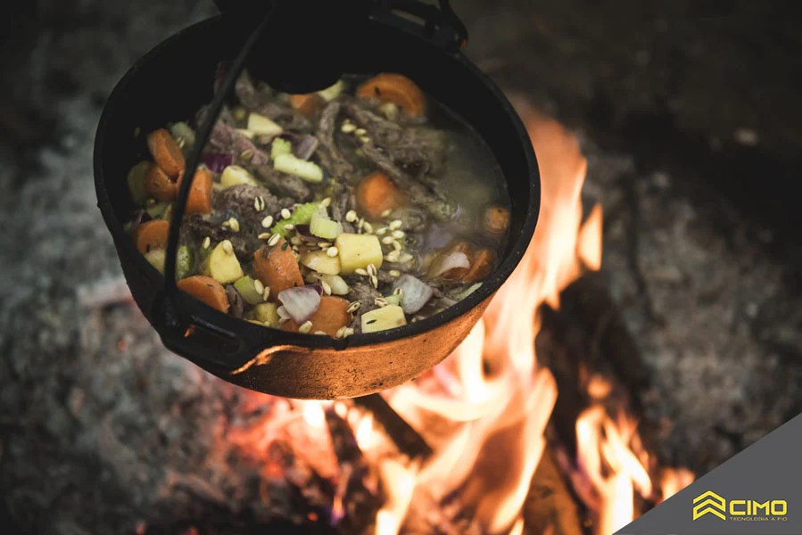

Sobrevivencialismo
O sobrevivencialismo é uma filosofia de vida que consiste em se preparar para lidar com situações de sobrevivência e se amplia até mesmo para os problemas físicos, financeiros e mentais.
É uma cultura que se resume em ter a atitude e a consciência de esperar sempre o melhor do mundo, mas também estar preparado para o pior.
Com uma visão de mundo diferenciada, para exercitar esse instinto e as práticas de sobrevivência, é comum os seguidores do movimento irem para o meio as matas, morros e em beira de rios, exercitando as práticas de bushcraft e sobrevivência. É pura aventura!
O QUE É SOBREVIVENCIALISMO?
Muitas pessoas se confundem ao pensar que o sobrevivencialismo se resume a exercitar as técnicas de sobrevivência na mata. Essa, de fato, é uma parcela muito importante de tudo o que essa cultura prega, mas não é a única.
Em termos simples, o sobrevivencialismo é uma tentativa de tornar-se mais autossuficiente, para conseguir superar as crises e as volatilidades da sociedade de uma forma mais saudável.

×